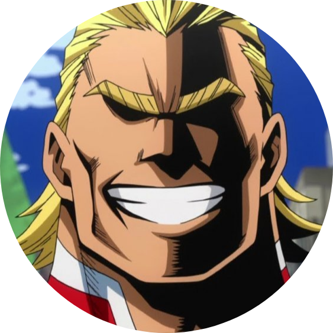
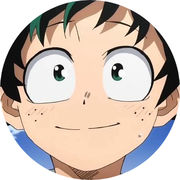

People are not born equal, a realization that four-year-old Izuku Midoriya faced when bullied by his classmates who had unique special powers. Izuku was one of the rare cases where he was born with absolutely no unique powers. This did not stop Izuku from pursuing his dream, a dream of becoming a great hero like the legendary All Might. To become the great hero he hopelessly wants to become, he will now join the ranks of one of the highest rated "Hero Academies" in the country: U.A. High School. With the help of his idol All Might, will he be able to claim the ranks and become a true hero?
The story of My Hero Academia is set in a world where currently most of the human population has gained the ability to develop superpowers called "Quirks" (個性, Kosei), which occur in children within the age of four: it is estimated that around 80% of the world population has a Quirk. There are infinite types of Quirks, and it is extremely unlikely to find two people who have the exact same power, unless they are closely related. These particular abilities have allowed the development of a new category of people: Heroes, who face the evil-voted individuals who use the Quirks for selfish and criminal purposes, commonly known as Villains. In addition, Heroes who choose to exercise heroism at work level are recognized as Pro Heroes. Unless the individual is registered as a Pro Hero, the voluntary use of his or her Quirk in public places is considered a crime, except in exceptional cases.
|

All Might |

Eraser Head |
Present Mic |
Cementoss |
|

Izuki Midoriya |

Katsuki Bakugo |
Kyoka Jiro |
Denki Kaminari |
|
Endeavor |
Hawks |
Best Jeanist |
Edgeshot |
|
All for One |
Tomura Shigaraki |
Kurogiri |

Gigantomachia |